Cloudflare · Zero Trust · Windows
Cloudflare WARP 复活了！One Client 免费节点部署完整教程｜Zero Trust 注册、配置与实测
本文逐步记录视频中的全部操作：注册 Cloudflare、进入 Zero Trust、下载 Cloudflare One Client、完成设备注册、修改设备配置文件，最后连接并测速。
在 YouTube 观看本期视频开始前要准备什么
- 一台 Windows 电脑。Cloudflare 同时提供 macOS、Linux、iOS 和 Android 客户端。
- 一个可以正常收取验证码的邮箱。
- 一个 Cloudflare 账户。没有账户可以在操作过程中注册。
- 安装和首次配置期间，先关闭电脑上其他 VPN 或代理客户端，避免网络路由冲突。
认识 Cloudflare WARP 与 One Client
视频开头提到，之前使用过 Cloudflare WARP。Cloudflare 现在将面向组织和 Zero Trust 的客户端称为 Cloudflare One Client。它仍然负责在设备与 Cloudflare 网络之间建立加密连接，只是管理入口和产品名称发生了变化。
本期的目标是：创建或登录 Cloudflare 账户，建立 Zero Trust 组织，把当前 Windows 电脑注册进去，并让客户端通过该组织的配置连接。
注册并登录 Cloudflare
-
打开 Cloudflare 官网
在浏览器中访问 cloudflare.com 。点击页面右上角的 Log in。
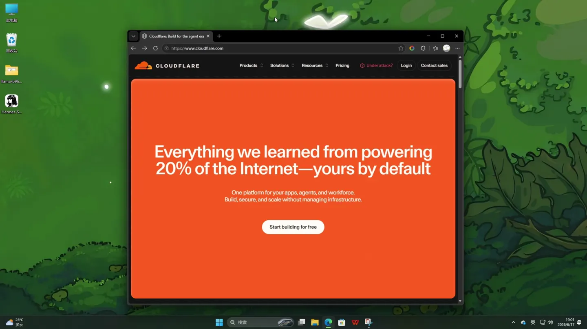
Cloudflare 官网首页。页面样式以后可能会调整，登录入口通常位于右上角。 -
没有账户时先注册
登录页下方有 Sign up。点击后输入自己的邮箱和密码， 完成页面上的人机验证，然后提交注册。已经有 Cloudflare 账户则直接登录。
-
把控制台切换成简体中文
登录控制台后，点击右上角头像，打开 Language，选择 简体中文。这一步不是必需的，只是方便与视频里的菜单名称保持一致。
进入 Zero Trust 并找到设备注册入口
-
进入 Cloudflare One / Zero Trust
在 Cloudflare 控制台左侧菜单找到 Zero Trust。进入后，页面标题可能显示为 Cloudflare One。
-
打开服务提供商集成
在左侧依次展开 集成 → 服务提供商。
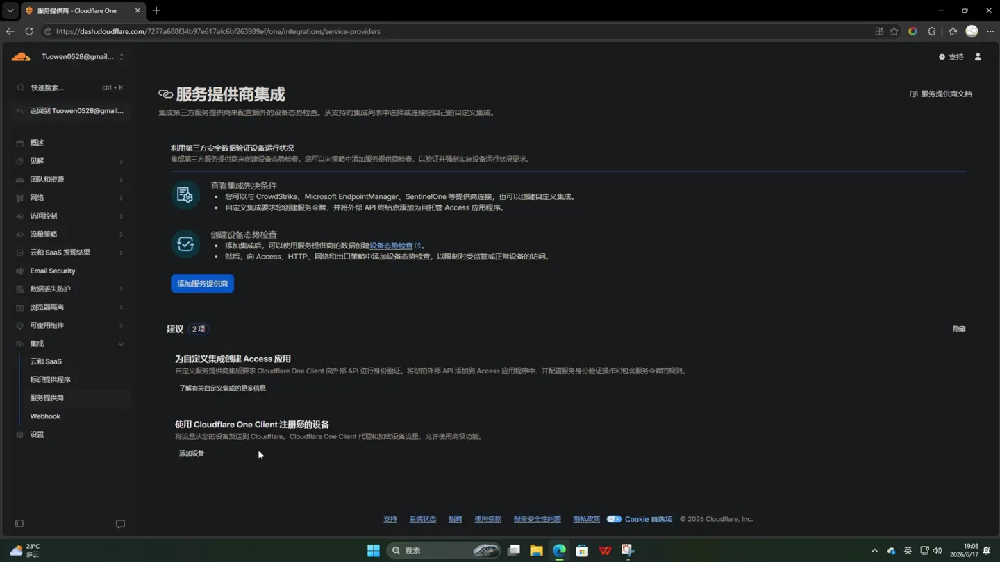
服务提供商集成页面下方提供 Cloudflare One Client 的设备注册入口。 -
点击“添加设备”
向下找到“使用 Cloudflare One Client 注册您的设备”区域，点击 添加设备。随后会进入一个分为七步的设备接入向导。
选择系统并下载 Cloudflare One Client
-
选择当前设备的操作系统
在向导第一步选择系统。页面提供 Windows、macOS、Linux、Android 和 iOS。 视频使用的是 Windows。
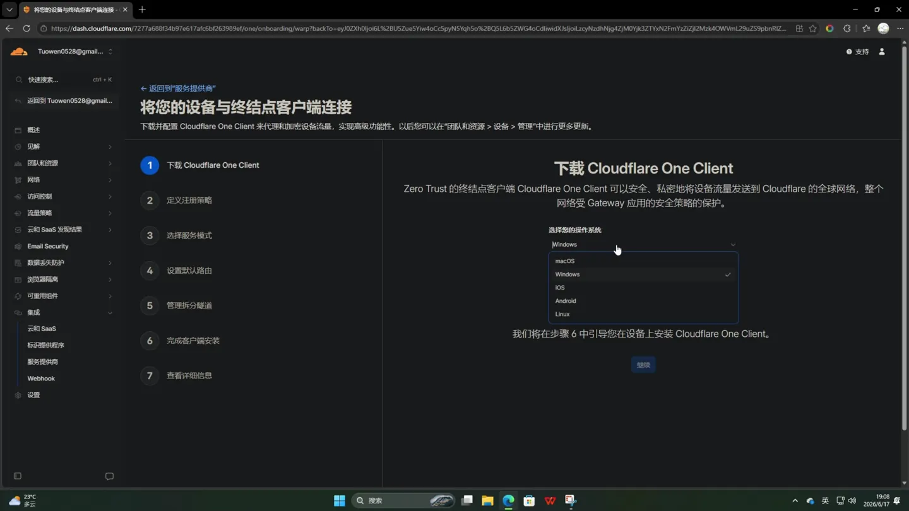
系统必须与正在操作的设备一致，本文后续步骤以 Windows 为例。 -
进入稳定版本下载页
点击 下载发布版本。Cloudflare 文档会在新标签页打开。 找到 Windows 区域，点击橙色的 Download latest stable release。
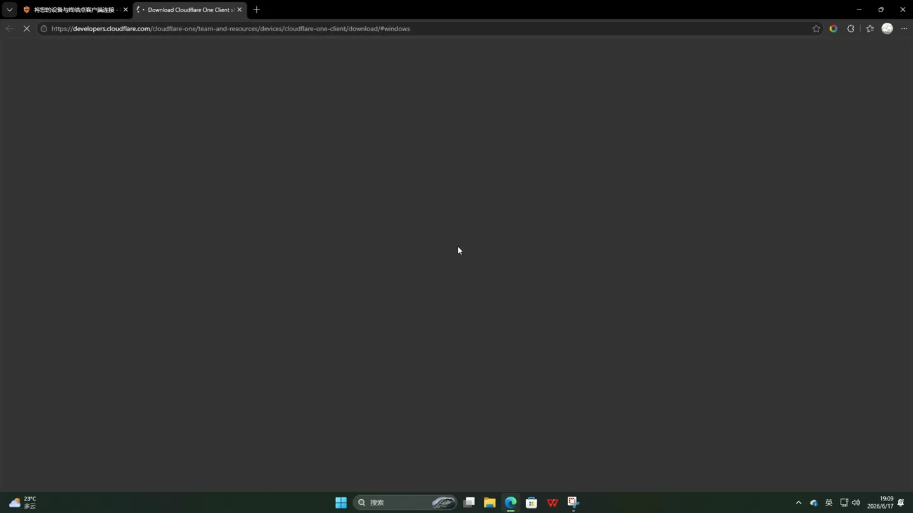
优先使用最新稳定版，不要把 Beta 版本当作日常使用版本。 也可以直接打开 官方稳定版下载页面。
-
运行 Windows 安装包
下载完成后打开扩展名为
.msi的安装包，按安装向导完成安装。 视频中的文件名包含当时的版本号；以后版本号会变化，因此不需要寻找完全相同的文件名。
完成接入向导和团队验证
先在网页中完成向导
-
定义注册策略
回到 Cloudflare 的设备接入向导，确认“下载 Cloudflare One Client”已经完成， 点击 继续。
在“定义注册策略”页面，按照视频使用推荐流程添加允许注册的邮箱。把稍后用于 客户端登录的邮箱填入“添加已批准的用户电子邮件”，再点击 继续。
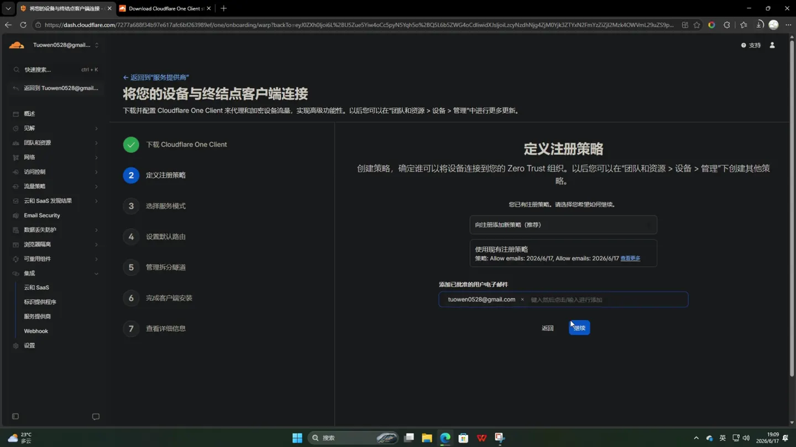
这里填写的是你自己的邮箱。不要照抄视频画面中的示例地址。 -
选择服务模式
下一步是“选择服务模式”。视频没有修改默认选项，直接点击 继续。
-
设置默认路由
“设置默认路由”页面用于决定哪些流量进入 Cloudflare。视频保留系统给出的默认配置， 点击 继续。
-
管理拆分隧道
拆分隧道可以排除或包含特定地址。视频中没有添加自定义规则，向下滚动并继续。 如果你已经有其他 VPN 或特殊内网路由，不要盲目照搬默认值，需要按自己的网络环境调整。
-
来到“完成客户端安装”
前五项完成后，网页会显示当前 Zero Trust 组织的团队名称。点击团队名称右侧的复制按钮， 稍后要把它粘贴到客户端。每个人的团队名称都不同。
然后在客户端中登录组织
-
选择 Cloudflare One Client 模式
首次启动客户端时会询问用途。左边是“私密浏览”，右边是 Cloudflare One Client。选择右边并点击继续。
-
输入团队名称
客户端出现“将设备注册到 Cloudflare One Client”页面后，粘贴刚才从网页复制的 团队名称，点击 继续。
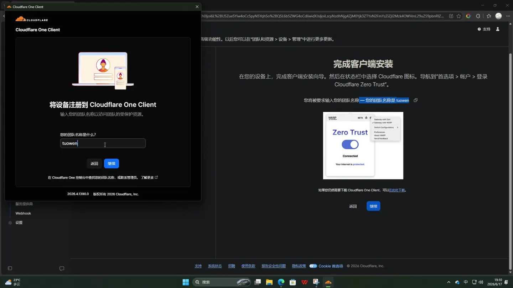
画面中的团队名称只是视频作者的示例。你必须使用自己控制台显示的名称。 -
通过邮箱验证身份
浏览器会打开 Cloudflare Access 登录页面。在 Log in to Warp Login App 中输入注册策略允许的邮箱， 点击 Send login code。
打开邮箱查收一次性验证码并完成验证。如果一直收不到邮件，先检查垃圾邮件， 再确认输入的邮箱与注册策略中允许的邮箱完全一致。
-
允许浏览器打开客户端
验证成功后，浏览器会询问是否打开 Cloudflare One Client。勾选 “始终允许此网站打开此类链接”，点击 打开。 页面出现 Success! 表示设备注册已经成功。
修改设备配置文件并启用 MASQUE
-
完成网页向导
回到设备接入向导，点击 继续，再选择 返回到流量策略概览。
-
进入设备配置文件
在左侧打开 团队和资源 → 设备，然后切换到 设备配置文件 标签。
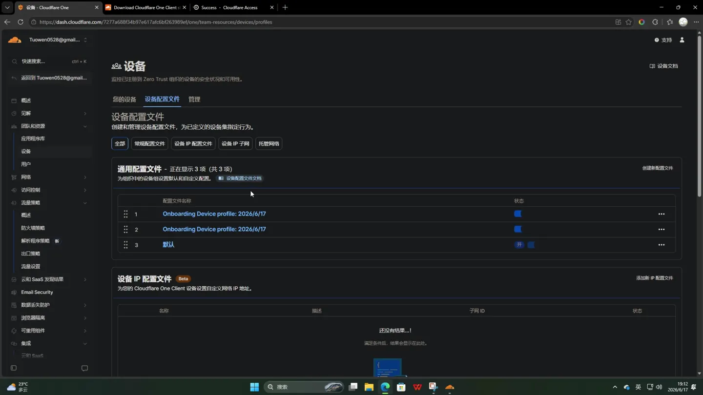
向导会自动生成带日期的 Onboarding Device profile。 -
找到刚刚生成的 Onboarding 配置
列表里通常会出现名为
Onboarding Device profile: 日期的配置文件。优先检查最新生成、 且匹配当前注册邮箱的配置。视频画面中出现了两个同名日期配置，因此逐个打开确认。 -
打开配置
点击目标配置文件右侧的三个点，选择 配置。进入页面后向下滚动到“配置设置”。
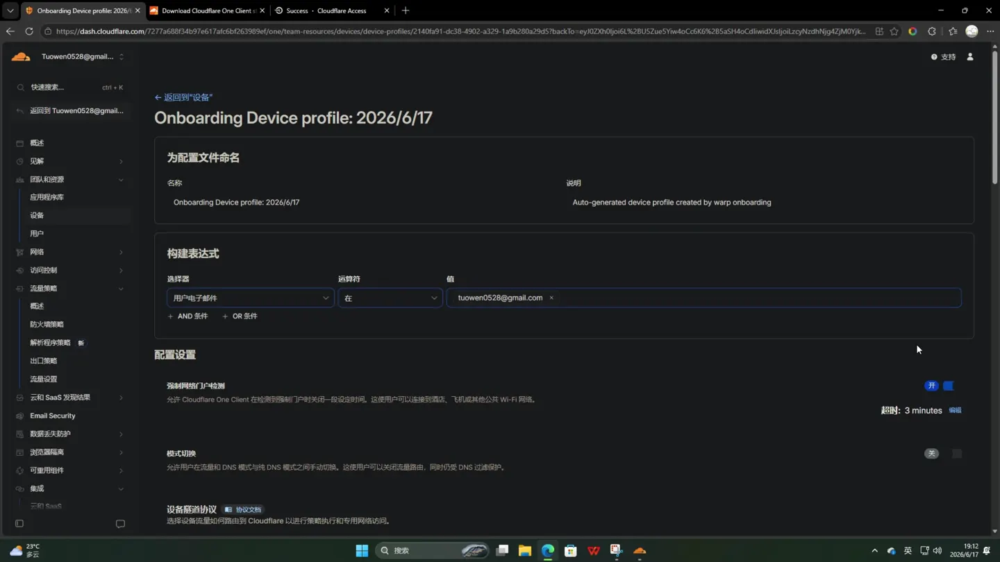
“设备隧道协议”区域提供 WireGuard 和 MASQUE 两个选项。 -
把协议从 WireGuard 改为 MASQUE
在“设备隧道协议”中选择第二项 MASQUE。弹窗询问是否确定从 WireGuard 切换到 MASQUE 时，点击确认。
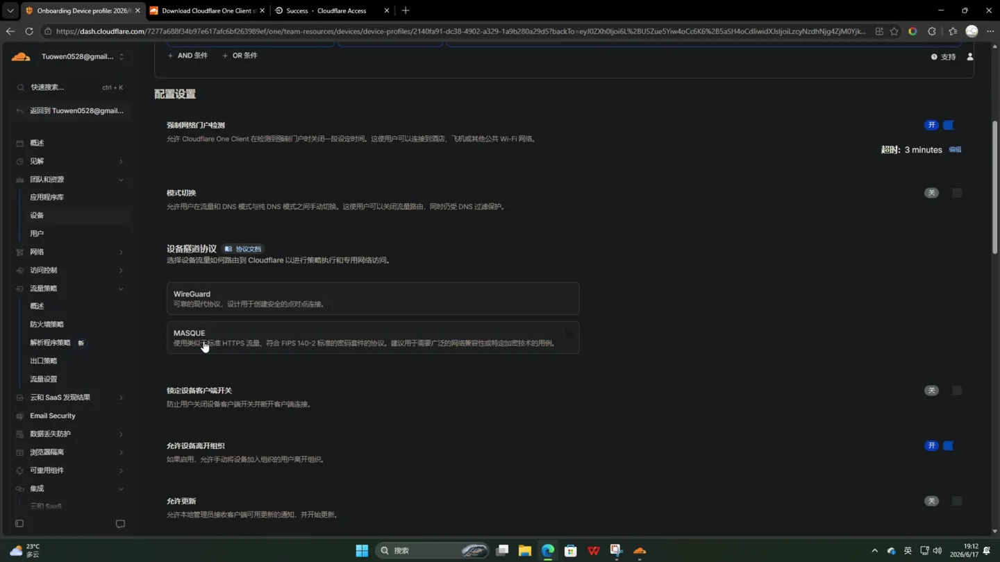
确认切换后，还要继续完成下一步保存，不能直接关闭页面。 -
保存配置文件
滚动到页面底部，点击 保存配置文件。 回到列表后，右上角会出现绿色成功提示，表示配置已经保存。
关闭其他代理并连接 Cloudflare One Client
-
关闭其他 VPN 或代理
视频先关闭了电脑上已有的 VPN/代理工具，也关闭了浏览器代理扩展。这样可以避免测速结果被其他 代理影响，也能减少多个虚拟网卡或路由规则互相冲突。
-
打开 One Client 并点击连接
打开 Cloudflare One Client，点击蓝色的 连接。成功后客户端会显示 已连接。
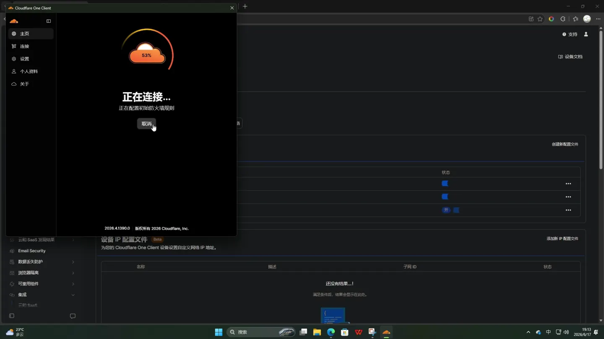
客户端出现“已连接”，说明当前设备已经接入 Cloudflare。 -
连接失败时先重试
视频建议连接不成功时多试几次。若反复失败，按下面顺序检查：
- 确认后台配置文件已经保存。
- 确认客户端登录的是正确团队名称。
- 确认邮箱属于设备注册策略允许的用户。
- 关闭其他 VPN、系统代理和浏览器代理扩展。
- 等待几分钟再试。Cloudflare 配置同步到设备可能需要时间。
进行速度测试
-
打开 Speedtest
浏览器访问 speedtest.net ，开始测速。测速前再次确认只有 Cloudflare One Client 在工作。
-
查看视频中的测试结果
视频实测下载速度约为 54.72 Mbps，上传速度约为 1.76 Mbps。当时电脑使用无线网络，没有连接网线。
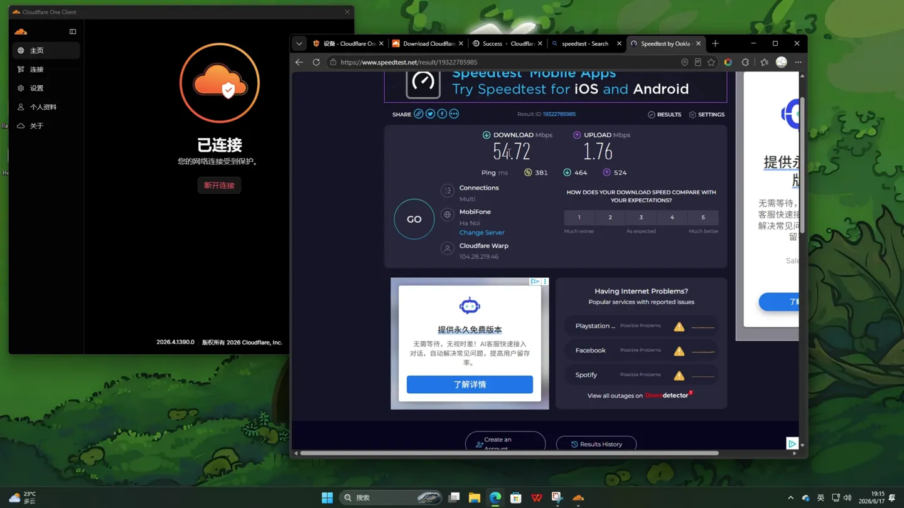
这是视频录制环境中的单次结果，不代表所有地区和网络环境。
视频中提到，在正常网络环境下可能达到两三百兆。不过实际速度会受到本地宽带、Wi-Fi 信号、 Cloudflare 接入点、设备性能和测试服务器等因素影响。判断效果时，最好在相同设备、相同网络下， 分别测试连接前和连接后的结果。
常见问题
为什么输入团队名称后无法继续？
团队名称必须来自你自己的 Cloudflare One 控制台。不要输入账户邮箱，也不要照抄视频中的
tuowen。注意不要带空格或复制到多余字符。
为什么收不到登录验证码？
检查垃圾邮件，并确认邮箱已经添加到设备注册策略。输入的邮箱必须与策略允许的地址一致。
为什么设备注册成功后还是连不上？
先确认目标 Onboarding Device profile 使用 MASQUE 并已保存，再关闭其他 VPN 和代理。 Cloudflare 官方说明设备设置更新可能需要一段时间才能传播到客户端。
页面上找不到视频里的菜单怎么办？
Cloudflare 会调整界面名称和位置。优先寻找“Zero Trust”“团队和资源”“设备”“设备配置文件” 等关键词，也可以使用控制台左上角的搜索框。
官方资料与相关链接
- 本期 YouTube 视频
- Cloudflare One Client 产品说明
- Cloudflare One Client 稳定版下载
- Cloudflare 设备注册权限文档
- Cloudflare 设备配置文件文档
本文按 2026 年 6 月 18 日发布的视频整理。Cloudflare 的菜单、客户端名称和默认策略可能更新， 请以操作时的官方页面为准，并遵守所在地法律法规及 Cloudflare 服务条款。